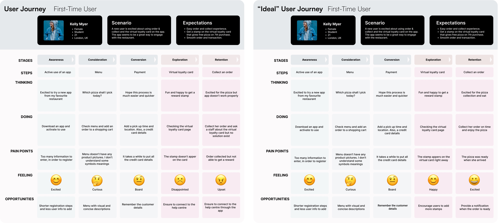
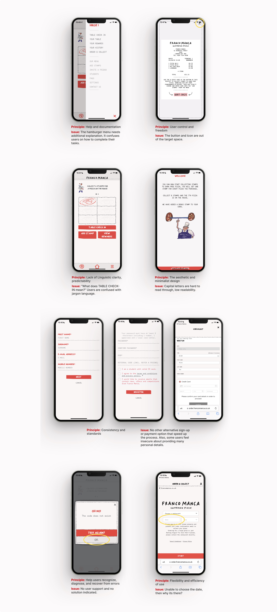
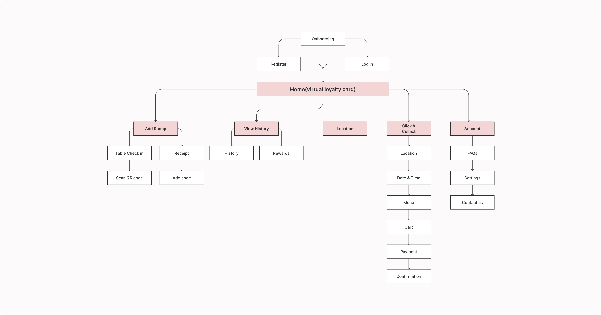
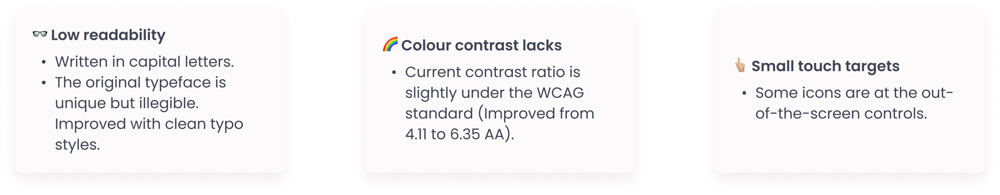

Franco Manca
Mobile app redesign for pizza restaurant - UX/UI design
Where:
London
What:
Native mobile app (iOS)
Why:
Portfolio project
Role:
Designer, Researcher
Category:
Food, Shopping
When:
July - August 2022
Company Introduction:
Franco Manca is a pioneering sourdough pizza in the UK and was named the UK's best Italian Restaurant on Yelp.
Problem:
Sadly, most users commented the app "never works" or "it's useless".
-Launched : 2019
-IOS app reviews : 2.7
-Google Play store reviews : 2.0 (+50K downloads)
Goal:
Identify usability issues and improve user engagement/satisfaction for the Franco manca app.
Design process:
I used the double diamond process that takes four main phases to get from the problem to the solution.
*Disclaimer*
This case study is unsolicited and not affiliated with or endorsed by Franco Manca.
Discovery
-Secondary research
Based on the App store review observations through affinity diagrams, severe problems occurred in the following stages.
-Usability test
Having the secondary research in mind, I conducted moderated usability testing to find how users interact with the current app and their pain points.
The researcher requested five participants to complete tasks on the app to observe user behaviour and feelings. The target audience is two males and three females 20-50 years old who are familiar with Franco Manca.
Define
-User persona and Customer journey map
With my research insights, I first proceeded to create a user persona to represent our target users

Then, I generated two customer journey map to describe a typical target user's experience interacting with a Franco Manca app-Their progression in the journey and struggles felt along the way.

-Competitive research
Understanding the market and competitor business deeper, I conducted a competitive audit to get direction on gaps and opportunities to address with the Franco Manca app. The audit includes analysing their patterns and user flows to distinguish their strengths and weaknesses.
-Identify issue areas with UX audit
I employed ten usability heuristics by Jakob Nielsen to find whether the design ticks all the usability boxes. It's crucial to detect key problem areas with the existing interface. I found 7 improvement opportunities:

Develop
-SCAMPER
At this stage, creative brainstorming plays a critical role. I applied the SCAMPER method that can improve or innovate products that are not performing well in the market. It takes seven different ways to reimagine a product.
Solutions for the severe problems:
✅ Safer registration experience:
▫️ Require only essential user details.
▫️ Offer socials login as an alternative.
✅ Better issue-handling experience:
▫️ Improving the error screen by adding a "contact us" button.
✅ Merge the features:
▫️ Eliminate the menu page for smoother order experiences.
▫️ Place orders within the app instead of opening another webpage.
✅ Enhance the UI design:
▫️ Typography, colours, and touch targets for improving accessibility issues.
✅ Clear navigation:
▫️ Replace the complex hamburger and bottom menu bar with a simple bottom navigation bar.
-Revised Information architecture
The original information architecture is convoluted that users struggle to find the contents they want immediately.
I clarified the IA with fewer menu contents that we should robustly focus on business tracking as a priority.

-Wireframes
First, I sketched out possible solutions on paper for the main screens to generate different prototype layouts rather than focusing on design details.
Then, I moved to commit to mid and high-fidelity designs for further development.

Delivery
-Validation testing
I conducted the second usability test that requested the precious participants to do the same tasks as the initial test for usability testing.
-Mock ups
Here are the design improvements after having the test feedback
-Functional Prototyping
I used Figma to create a functional prototype of all the screens.
View prototype
-Design system
I revised the UI design kit to refine all these original UI issues.

-Accessibility
There were some accessibility considerations to support a better user experience.

Conclusion
It was my first redesign project and a fun problem to tackle.
My main challenges were enhancing the usability and accessibility of the app to improve customer satisfaction without violating the brand image.
Also, I attempted the subtle content evolution compared to the original design that minimises user alienation for the existing users.
Next steps
Even though the usability test indicated that I solved major severe usability issues, there are some other spaces for the next step.
1. Replace the home page from reward to order & collect page instead. The company should focus on their business to maximise its profit.
2. Menu with pictures for better user desirability: visuals help boost sales.
3. Offering also a delivery option to meet the industry standard.